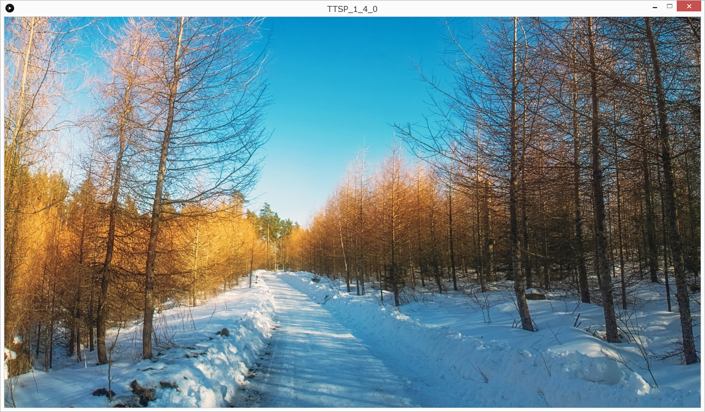

TTSProjectionとは？
TTSProjectionはとかさんが作成した平面用プロジェクションマッピングソフトです。
30年度課題研究成果物
正式名称「Tamura Tokai Sibuya Projection」

主な機能
- 複数の画像、動画の再生
- アナログ・デジタル時計の表示
- プログラムリストによる正確なメディア制御
各モードの説明
- ノーマルモード(normal)
- クロックモード(clock)
- ノーマルプラスモード(normal+)
- デバックモード(debug)
画像または動画をそのまま表示するモード。
一定時間何も表示させないことも可能
ノーマルモードの前面に時計を表示するモード
画像や動画を使わなくても時計をプログラムで時計を描画することも可
時計は現在時刻を正確に刻みます！
フェードインアウトや回転などの画像や動画が動きます
テストパターンを表示するモード。プロジェクターの調節用。
使い方
- 写真や動画などを
data/Media内に保存します。 -
プログラムリストに再生する順番などを設定します。
※デフォルトでは
プログラムリストの詳しい編集方法はこちら！data内にあるprogram.xmlを記述します。 - アプリケーションを起動します。
使用に当たっての注意
リムーバブルディスクなどに保存されている場合はデスクトップにコピーをして使用してください
※リムーバブルディスクから起動した場合は正常に動作しない場合があります。
動作が安定しない場合、動画の画質を落とすことで改善することがあります。
更新履歴
最新バージョン -Ver.1.5.1